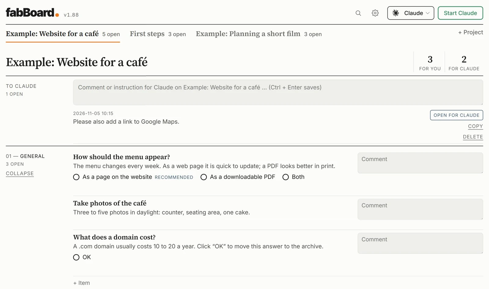
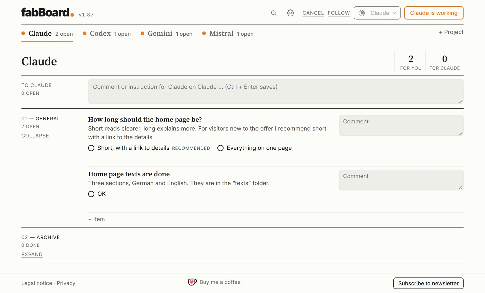

A decision layer between you and your AI
One board for all your projects: the AI works on several projects at the same time, asks you, and you decide.
fabBoard is a free program for everyone who wants to work on their own projects with an AI model of their choice – without chatting and without technical knowledge. Each project, whether a website, a text, a research task or a piece of software, has its own board and its own folder.
01Write a task
Write on the board what the AI should do – just like a message.
02Start the AI
One click, and the AI works in the project folder. Meanwhile you start it on the next project.
03Decide any time
The AI puts its questions with options and a recommendation on the board. You click an answer, it implements it.
Example projectsThree projects to try out.
During setup you can create three example projects: a website for a café, a short film and “First steps” for practice. In the picture the AI has put a question with options and a recommendation on the board. You click an answer, and the AI implements it.

Power usersFour AIs, four projects, at the same time.
Create one project per model and name it after the AI: Claude, Codex, Gemini and Mistral. Each project is linked to its model. This way you give tasks to all four at the same time, and each AI’s questions land in its own tab. The orange dot shows which AI is working right now.
For this you need an account with each provider.

- Several projects at onceIn one window, you keep the overview.
- You decide, the AI worksEvery decision stays documented on the board.
- Any AI you like, per projectClaude, ChatGPT, Gemini, Mistral or a model on your own computer.
- Setup without prior knowledgeInstall the AI with one click and sign in in your browser.
- Your data stays with youPlain files on your computer, no account, no statistics.
- Free and open sourceMIT licence, German and English, light and dark.
- Windows 10 or 11 (Mac planned)
- An account with an AI (e.g. Claude or ChatGPT), your own API key or a model on your own computer
- Nothing else: fabBoard fetches everything it needs by itself, without administrator rights.
Download the file fabBoard-Setup from GitHub and open it. The setup guides you step by step through everything else.
Download fabBoardPreview, not signed yet: Windows shows a warning when you open it. Click “More info” and then “Run anyway”.